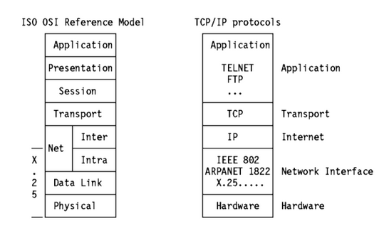
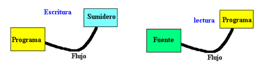

Unidad 2. Normas y estándares de redes de datos
TECNOLÓGICO NACIONAL DE MÉXICO
INSTITUTO TECNOLÓGICO DE CUAUTLA
Redes de computadoras
Unidad 2. Normas y estándares de redes de datos
Profesor: Guillermo Urzúa Sánchez
Alumno: Martínez Sánchez José Roberto
2.1 Modelo de comunicación OSI
El modelo OSI (modelo de interconexión de sistemas abiertos) es un marco conceptual que se utiliza para describir las funciones de un sistema de redes. El modelo OSI caracteriza las funciones informáticas en un conjunto universal de reglas y requisitos para respaldar la interoperabilidad entre diferentes productos y software. En el modelo de referencia OSI, las comunicaciones entre un sistema informático se dividen en siete capas de abstracción diferentes: física, enlace de datos, red, transporte, sesión, presentación y aplicación.
Creado en un momento en que la informática en red estaba en su infancia, el OSI fue publicado en 1984 por la Organización Internacional de Normalización (ISO). Aunque no siempre se asigna directamente a sistemas específicos, el modelo OSI todavía se utiliza hoy en día como un medio para describir la arquitectura de red.
Las 7 capas del modelo OSI son:Capa anterior
1. Capa física
La capa más baja del modelo OSI se ocupa de la transmisión eléctrica u óptica de bits de datos no estructurados sin procesar a través de la red desde la capa física del dispositivo de envío a la capa física del dispositivo de recepción. Puede incluir especificaciones como voltajes, disposición de las clavijas, cableado y frecuencias de radio. En la capa física, se pueden encontrar recursos "físicos" como concentradores de red, cableado, repetidores, adaptadores de red o módems.
2. Capa de enlace de datos
En la capa de enlace de datos, los nodos conectados directamente se utilizan para realizar transferencias de datos de nodo a nodo donde los datos se empaquetan en tramas. La capa de enlace de datos también corrige errores que pueden haber ocurrido en la capa física.
La capa de enlace de datos comprende dos subcapas propias. El primero, el control de acceso a medios (MAC), proporciona control de flujo y multiplexación para transmisiones de dispositivos a través de una red. El segundo, el control de enlace lógico (LLC), proporciona control de flujo y error sobre el medio físico, así como identifica protocolos de línea.
3. Capa de red
La capa de red es responsable de recibir las tramas de la capa de enlace de datos y entregarlas a sus destinos previstos según las direcciones contenidas dentro de la trama. La capa de red encuentra el destino mediante direcciones lógicas, como IP (protocolo de Internet). En esta capa, los enrutadores son un componente crucial que se utiliza para enrutar, literalmente, la información a donde debe ir entre las redes.
4. Capa de transporte
La capa de transporte gestiona la entrega y la verificación de errores de los paquetes de datos. Regula el tamaño, la secuencia y, en última instancia, la transferencia de datos entre sistemas y hosts. Uno de los ejemplos más comunes de la capa de transporte es TCP o el Protocolo de control de transmisión.
5. Capa de sesión
La capa de sesión controla las conversaciones entre diferentes computadoras. Una sesión o conexión entre máquinas se configura, administra y finaliza en la capa 5. Los servicios de la capa de sesión también incluyen autenticación y reconexiones.
6. Capa de presentación
La capa de presentación formatea o traduce datos para la capa de aplicación según la sintaxis o semántica que acepta la aplicación. Debido a esto, a veces también se denomina capa de sintaxis. Esta capa también puede manejar el cifrado y descifrado requeridos por la capa de aplicación.
7. Capa de aplicación
En esta capa, tanto el usuario final como la capa de aplicación interactúan directamente con la aplicación de software. Esta capa ve los servicios de red proporcionados a las aplicaciones del usuario final, como un navegador web u Office 365. La capa de aplicación identifica a los socios de comunicación, la disponibilidad de recursos y sincroniza la comunicación.
Capa siguiente

2.2 Modelo de comunicación TCP/IP
El modelo OSI que acabamos de ver es solo un modelo lógico / de referencia. Fue diseñado para describir las funciones del sistema de comunicación dividiendo el procedimiento de comunicación en componentes más pequeños y más simples. Pero cuando hablamos del modelo TCP / IP, fue diseñado y desarrollado por el Departamento de Defensa (DoD) en la década de 1960 y se basa en protocolos estándar. Significa Protocolo de control de transmisión / Protocolo de Internet.
El modelo TCP / IP es una versión concisa del modelo OSI. Contiene cuatro capas, a diferencia de las siete capas del modelo OSI. Las capas son:
-
1. Capa de enlace / acceso a la red
Esta capa corresponde a la combinación de la capa de enlace de datos y la capa física del modelo OSI. Busca direcciones de hardware y los protocolos presentes en esta capa permiten la transmisión física de datos.
Acabamos de hablar de que ARP es un protocolo de la capa de Internet, pero existe un conflicto sobre declararlo como un protocolo de la capa de Internet o la capa de acceso a la red. Se describe como que reside en la capa 3 y está encapsulado por los protocolos de la capa 2.
-
2. Capa de Internet
Esta capa es paralela a las funciones de la capa de red de OSI. Define los protocolos que son responsables de la transmisión lógica de datos en toda la red. Los principales protocolos que residen en esta capa son:
-
1. IP: significa Protocolo de Internet y es responsable de entregar paquetes desde el host de origen al host de destino mirando las direcciones IP en los encabezados de los paquetes. IP tiene 2 versiones:
IPv4 e IPv6. IPv4 es el que la mayoría de los sitios web utilizan actualmente. Pero IPv6 está creciendo a medida que el número de direcciones IPv4 es limitado en comparación con el número de usuarios.
-
2. CMP: significa Protocolo de mensajes de control de Internet. Está encapsulado dentro de datagramas IP y es responsable de proporcionar a los hosts información sobre problemas de red.
-
3. ARP - significa Protocolo de resolución de direcciones. Su trabajo consiste en encontrar la dirección de hardware de un host a partir de una dirección IP conocida. ARP tiene varios tipos: ARP inverso, ARP proxy, ARP gratuito y ARP inverso.
-
-
3. Capa de transporte / host a host
Esta capa es análoga a la capa de transporte del modelo OSI. Es responsable de la comunicación de un extremo a otro y de la entrega de datos sin errores. Protege las aplicaciones de capa superior de las complejidades de los datos. Los dos protocolos principales presentes en esta capa son:
-
1. Protocolo de control de transmisión (TCP): se sabe que proporciona una comunicación confiable y sin errores entre los sistemas finales. Realiza secuenciación y segmentación de datos. También tiene una función de reconocimiento y controla el flujo de datos a través del mecanismo de control de flujo. Es un protocolo muy efectivo pero tiene mucha sobrecarga debido a tales características. El aumento de los gastos generales conduce a un aumento de los costos.
-
2. Protocolo de datagramas de usuario (UDP): por otro lado, no proporciona ninguna de estas funciones. Es el protocolo de referencia si su aplicación no requiere un transporte confiable, ya que es muy rentable. A diferencia de TCP, que es un protocolo orientado a la conexión, UDP no tiene conexión.
-
-
4. Capa de proceso / aplicación
Esta capa realiza las funciones de las tres capas superiores del modelo OSI: capa de aplicación, presentación y sesión. Es responsable de la comunicación de nodo a nodo y controla las especificaciones de la interfaz de usuario. Algunos de los protocolos presentes en esta capa son: HTTP, HTTPS, FTP, TFTP, Telnet, SSH, SMTP, SNMP, NTP, DNS, DHCP, NFS, X Window, LPD. Eche un vistazo a Protocolos en la capa de aplicación para obtener información sobre estos protocolos. Los protocolos distintos a los presentes en el artículo vinculado son:
- 1. HTTP y HTTPS: HTTP significa protocolo de transferencia de hipertexto. La World Wide Web lo utiliza para administrar las comunicaciones entre los navegadores web y los servidores. HTTPS son las siglas de HTTP-Secure. Es una combinación de HTTP con SSL (Secure Socket Layer). Es eficiente en los casos en que el navegador necesita completar formularios, registrarse, autenticarse y realizar transacciones bancarias.
- 2. SSH: SSH son las siglas de Secure Shell. Es un software de emulación de terminal similar a Telnet. La razón por la que se prefiere SSH es por su capacidad para mantener la conexión cifrada. Establece una sesión segura a través de una conexión TCP / IP.
- 3. NTP: NTP significa Protocolo de tiempo de red. Se utiliza para sincronizar los relojes de nuestra computadora con una fuente de hora estándar. Es muy útil en situaciones como transacciones bancarias. Suponga la siguiente situación sin la presencia de NTP. Suponga que realiza una transacción, en la que su computadora lee la hora a las 2:30 p.m. mientras que el servidor la registra a las 2:28 p.m. El servidor puede fallar gravemente si no está sincronizado.
2.3 Estándares IEEE 802
IEEE 802 es una colección de estándares de redes que cubren las especificaciones de la capa física y de enlace de datos para tecnologías como Ethernet e inalámbrica. Estas especificaciones se aplican a las redes de área local ( LAN ) y las redes de área metropolitana ( MAN ). IEEE 802 también ayuda a garantizar la interoperabilidad de múltiples proveedores al promover estándares que los proveedores deben seguir.
Esencialmente, los estándares IEEE 802 ayudan a garantizar que los servicios y tecnologías de Internet sigan un conjunto de prácticas recomendadas para que los dispositivos de red puedan funcionar juntos sin problemas.
IEEE 802 se divide en 22 partes que cubren los aspectos físicos y de enlace de datos de las redes. La familia de estándares es desarrollada y mantenida por el Comité de Estándares IEEE 802 LAN / MAN, también llamado LMSC. IEEE significa Instituto de Ingenieros Eléctricos y Electrónicos.
El conjunto de estándares comenzó en 1979 con un estándar de "red local para interconexión de computadoras", que fue aprobado un año después. El LMSC ha elaborado más de 70 estándares para IEEE 802.
2.3.1 Estándares IEEE 802 para Redes Alámbricas.
-
802.1 Puente
Puente y gestión LAN / MAN. Cubre la administración y las subcapas inferiores de OSI Layer 2, incluido el puente basado en MAC (control de acceso a medios), LAN virtuales y control de acceso basado en puertos. Esto también contiene el grupo de tareas de redes sensibles al tiempo.
-
802.2 Enlace lógico
Define el protocolo de control de enlaces lógicos (LLC) del IEEE, el cual asegura que los datos sean transmitidos de forma confiable por medio del enlace de comunicación. La capa de Datos-Enlace en el protocolo OSI esta subdividida en las subcapas de Control de Acceso a Medios (MAC) y de Control de Enlaces Lógicos (LLC).
-
802.3 Ethernet
Proporciona redes asincrónicas mediante "detección de portadora, acceso múltiple con detección de colisiones" (CSMA / CD) a través de medios coaxiales, de cobre de par trenzado y de fibra óptica. Las velocidades actuales oscilan entre 10 Mbps y 10 Gbps. Consulte la lista de tecnologías 802.3 más utilizadas.
-
802.4 Token Bus
El estándar token bus define esquemas de red de anchos de banda grandes, usados en la industria de manufactura. Se deriva del Protocolo de Automatización de Manufactura (MAP). La red implementa el método token-passing para una transmisión bus. Un token es pasado de una estación a la siguiente en la red y la estación puede transmitir manteniendo el token. Los tokens son pasados en orden lógico basado en la dirección del nodo, pero este orden puede no relacionar la posición física del nodo como se hace en una red token ring. El estándar no es ampliamente implementado en ambientes LAN.
-
802.5 Token Ring
Define los protocolos de acceso, cableado e interface para la LAN token ring. IBM hizo popular este estándar. Usa un método de acceso de paso de tokens y es físicamente conectada en topología estrella, pero lógicamente forma un anillo. Los nodos están conectados a una unidad de acceso central (concentrador) que repite las señales de una estación a la siguiente.Las unidades de acceso están conectadas para expandir la red, que amplía el anillo lógico. La Interfaz de Datos en Fibra Distribuida (FDDI) fue basada en el protocolo token ring 802.5, pero fue desarrollado por el Comité de Acreditación de Estándares (ASC) X3T9.Es compatible con la capa 802.2 de Control de Enlaces Lógicos y por consiguiente otros estándares de red 802.
-
802.6 Doble Bus de cola distribuida
Define un protocolo de alta velocidad donde las estaciones enlazadas comparten un bus dual de fibra óptica usando un método de acceso llamado Bus Dual de Cola Distribuida (DQDB). El bus dual provee tolerancia de fallos para mantener las conexiones si el bus se rompe. El estándar MAN esta diseñado para proveer servicios de datos, voz y vídeo en un área metropolitana de aproximadamente 50 kilómetros a tasas de 1.5, 45, y 155 Mbits/seg. DQDB es el protocolo de acceso subyacente para el SMDS (Servicio de Datos de Multimegabits Switcheados), en el que muchos de los portadores públicos son ofrecidos como una manera de construir redes privadas en áreas metropolitanas.
-
802.7 Grupo Asesor Técnico de Anchos de Banda
Este comité provee consejos técnicos a otros subcomités en técnicas sobre anchos de banda de redes.
-
802.8 Grupo Asesor Técnico de Fibra Óptica
Provee consejo a otros subcomités en redes por fibra óptica como una alternativa a las redes basadas en cable de cobre.
-
802.9 LAN de servicios integrados
El grupo de trabajo del IEEE 802.9 trabaja en la integración de tráfico de voz, datos y vídeo para las LAN 802 y Redes Digitales de Servicios Integrados (ISDN's). Los nodos definidos en la especificación incluyen teléfonos, computadoras y codificadores/decodificadores de vídeo (codecs). La especificación ha sido llamada Datos y Voz Integrados (IVD). El servicio provee un flujo multiplexado que puede llevar canales de información de datos y voz conectando dos estaciones sobre un cable de cobre en par trenzado. Varios tipos de diferentes de canales son definidos, incluyendo full duplex de 64 Kbits/seg sin switcheo, circuito switcheado, o canales de paquete switcheado.
-
802.10 Seguridad LAN interoperable
Este grupo trabaja en la definición de un modelo de seguridad estándar que opera sobre una variedad de redes e incorpora métodos de autenticación y encriptamiento.
2.3.2 Estándares IEEE 802 para Redes Inalámbricas.
-
802.11 WiFi
Control de acceso a medios de LAN inalámbrica y especificación de capa física. 802.11a, b, g, etc. son enmiendas al estándar 802.11 original. Los productos que implementan los estándares 802.11 deben pasar pruebas y se denominan "certificados por Wi-Fi".
802.11a
Utiliza multiplexación por división de frecuencia ortogonal Velocidad de datos mejorada a 54 Mbps Ratificado después de 802.11b
802.11b
Mejora de 802.11 que agregó modos de velocidad de datos más altos al DSSS (espectro de propagación de secuencia directa) ya definido en el estándar 802.11 original Velocidad de datos aumentada a 11 Mbps
802.11d
Mejora de 802.11a y 802.11b que permite el roaming global Los detalles se pueden configurar en la capa MAC
802.11e
Mejora de 802.11 que incluye características de calidad de servicio ( QoS ) Facilita la priorización de transmisiones de datos, voz y video
802.11g
Extiende la velocidad máxima de datos de los dispositivos WLAN que operan en la banda de 2.4 GHz, de una manera que permite la interoperación con dispositivos 802.11b.
802.11h
Mejora de 802.11a que resuelve problemas de interferencia Selección de frecuencia dinámica (DFS) Transmitir control de potencia (TPC)
802.11i
Mejora de 802.11 que ofrece seguridad adicional para aplicaciones WLAN Define un cifrado, autenticación e intercambio de claves más sólidos.
802.11j
Extensiones regulatorias japonesas a la especificación 802.11a Rango de frecuencia de 4,9 GHz a 5,0 GHz
802.11k
Hace mediciones de recursos de radio para redes que utilizan especificaciones de la familia 802.11
802.11m
Mantenimiento de las especificaciones de la familia 802.11 Correcciones y enmiendas a la documentación existente
802.11n
Estándares de mayor velocidad Varias tecnologías competidoras e incompatibles; a menudo llamado "pre-n" Velocidades máximas de 108, 240 y 350+ MHz
802.11x
Término "genérico" mal utilizado para las especificaciones de la familia 802.11
-
802.12 Prioridad de Demanda
Este comité está definiendo el estándar Ethernet de 100 Mbits/seg. Con el método de acceso por Prioridad de Demanda propuesto por Hewlett Packard y otros vendedores. El cable especificado es un par trenzado de 4 alambres de cobre y el método de acceso por Prioridad de Demanda usa un hub central para controlar el acceso al cable. Hay prioridades disponibles para soportar el envío en tiempo real de información multimedia.
-
802.15 Redes de área personal inalámbricas
Especificación de comunicaciones que fue aprobada a principios de 2002 por el IEEE para redes de área personal inalámbricas ( WPAN ).
802.15.1 Bluetooth
Tecnología inalámbrica de corto alcance (10 m) para mouse , teclado y audífonos inalámbricos a 2.4 GHz.
802.15.3a UWB
Enlace de " banda ultra ancha " de corto alcance y gran ancho de banda
802.15.4 ZigBee
Redes de sensores inalámbricos de corto alcance
802.15.5 Red de malla
Extensión de la cobertura de la red sin aumentar la potencia de transmisión o la sensibilidad del receptor Fiabilidad mejorada a través de la redundancia de rutas Configuración de red más sencilla : mejor duración de la batería del dispositivo
-
802.16 Redes inalámbricas de área metropolitana
Esto cubre los métodos de acceso inalámbrico de banda ancha fija y móvil que se utilizan para crear redes inalámbricas de área metropolitana. Conecta estaciones base a Internet mediante OFDM en bandas de frecuencia sin licencia (900 MHz, 2,4, 5,8 GHz) o con licencia (700 MHz, 2,5 - 3,6 GHz). Los productos que implementan los estándares 802.16 pueden someterse a pruebas de certificación WiMAX .
-
802.18 Radio Regulatory TAG
Admite grupos de trabajo inalámbricos IEEE 802 LMSC e IEEE 802. Participa activamente y monitorea asuntos regulatorios de radio.
-
802.19 Coexistencia
Establece estándares para la coexistencia entre diferentes estándares inalámbricos para dispositivos sin licencia.
-
802.21 Media Independent Handoff
Permite la optimización de los servicios de capa superior. Esto incluye IoT y servicios de transferencia, específicamente entre redes IEEE 802.
-
802.22 Red de área regional inalámbrica
Permite la optimización de los servicios de capa superior. Esto incluye IoT y servicios de transferencia, específicamente entre redes IEEE 802.
-
802.24 Grupo Asesor Técnico de Aplicaciones Verticales (TAG)
Centrado en categorías de aplicaciones que utilizan IEEE 802
Estándares, o use múltiples grupos de trabajo. Para estos, 802.24 actúa como un punto de contacto con otras organizaciones enfocadas en otros estándares IEEE 802. 802.24 también puede servir como un recurso para comprender los estándares IEEE 802 mediante el desarrollo de informes técnicos y otros documentos.
2.4 Pilas de protocolos y flujo de datos.
La pila de protocolos, (protocol stack en inglés) es una colección ordenada de protocolos organizados en capas que se ponen unas encima de otras y en donde cada protocolo implementa una abstracción encuadrada en la abstracción que proporciona la capa sobre la que está encuadrada. Los protocolos encuadrados en la capa inferior proporcionan sus servicios a los protocolos de la capa superior para que estos puedan realizar su propia funcionalidad.
La siguiente imagen representa la equivalencia entre los protocolos del modelo OSI y el modelo TCP/IP:
-
TPC/IP: este es definido como el conjunto de protocolos básicos para la comunicación de redes y es por medio de él que se logra la transmisión de información entre computadoras pertenecientes a una red. Este protocolo es el que provee la base para los servicios más utilizados como por ejemplo transferencia de ficheros, correo electrónico y login remoto.
Tipos de protocolos
Dentro de las redes informáticas se conoce bajo el nombre de protocolo al lenguaje, que es un conjunto de reglas formales, que permiten la comunicación de distintas computadoras entre sí. Dentro de las distintas redes, como Internet, existen numerosos tipos de protocolos, entre ellos:
TCP (Transmision Control Protocol): este es un protocolo orientado a las comunicaciones y ofrece una transmisión de datos confiable. El TCP es el encargado del ensamble de datos provenientes de las capas superiores hacia paquetes estándares, asegurándose que la transferencia de datos se realice correctamente.
HTTP (Hypertext Transfer Protocol): este protocolo permite la recuperación de información y realizar búsquedas indexadas que permiten saltos intertextuales de manera eficiente. Por otro lado, permiten la transferencia de textos de los más variados formatos, no sólo HTML. El protocolo HTTP fue desarrollado para resolver los problemas surgidos del sistema hipermedia distribuidos en diversos puntos de la red.
FTP (File Transfer Protocol): este es utilizado a la hora de realizar transferencias remotas de archivos. Lo que permite es enviar archivos digitales de un lugar local a otro que sea remoto o al revés. Generalmente, el lugar local es la PC mientras que el remoto el servidor.
SSH (Secure Shell): este fue desarrollado con el fin de mejorar la seguridad en las comunicaciones de internet. Para lograr esto el SSH elimina el envío de aquellas contraseñas que no están cifradas y codifica toda la información transferida.
UDP (User Datagram Protocol): el protocolo de datagrama de usuario está destinado a aquellas comunicaciones que se realizan sin conexión y que no cuentan con mecanismos para transmitir datagramas. Esto se contrapone con el TCP que está destinado a comunicaciones con conexión. Este protocolo puede resultar poco confiable excepto si las aplicaciones utilizadas cuentan con verificación de confiabilidad.
SNMP (Simple Network Management Protocol): este usa el Protocolo de Datagrama del Usuario (PDU) como mecanismo para el transporte. Por otro lado, utiliza distintos términos de TCP/IP como agentes y administradores en lugar de servidores y clientes. El administrador se comunica por medio de la red, mientras que el agente aporta la información sobre un determinado dispositivo.
TFTP (Trivial File Transfer Protocol): este protocolo de transferencia se caracteriza por sencillez y falta de complicaciones. No cuenta con seguridad alguna y también utiliza el Protocolo de Datagrama del Usuario como mecanismo de transporte.
SMTP (Simple Mail Transfer Protocol): este protocolo está compuesto por una serie de reglas que rige la transferencia y el formato de datos en los envíos de correos electrónicos. SMTP suele ser muy utilizado por clientes locales de correo que necesiten recibir mensajes de e-mail almacenados en un servidor cuya ubicación sea remota.
ARP (Address Resolution Protocol): por medio de este protocolo se logran aquellas tareas que buscan asociar a un dispositivo IP, el cual está identificado con una dirección IP, con un dispositivo de red, que cuenta con una dirección de red física. ARP es muy usado para los dispositivos de redes locales Ethernet. Por otro lado, existe el protocolo RARP y este cumple la función opuesta a la recién mencionada.
Flujo de datos
Todos los datos fluyen a través del ordenador desde una entrada hacia una salida. Este flujo de datos se denomina también stream. Hay un flujo de entrada (input stream) que manda los datos desde el exterior (normalmente el teclado) del ordenador, y un flujo de salida (output stream) que dirige los datos hacia los dispositivos de salida (la pantalla o un archivo).
El proceso para leer o escribir datos consta de tres pasos
- Abrir el flujo de datos
- Mientras exista más información (leer o escribir ) los datos
- Cerrar el flujo de datos